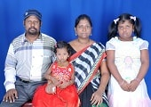

-

సత్యమేవ జయతే!
దేవుని నామమునకు స్తోత్రము. నా పేరు సత్యన్నారాయణరెడ్డి. మాది తూర్పు గోదావరి జిల్లా బిక్కవోలు మండలం కొంకుదురు గ్రామము.......
-

GOD WHO CHANGES!
I'm Naveen Reddy.I am from Hindu background.It was 2 years ago, I realised the truth that I am the child of God.
-

JEHOVA RAPHA!
My name is Sri Lakshmi. I am a skin doctor. My husband is also a doctor.We have two children, a daughter, 10 yrs. old and a son
-

AWESOME GOD !
I am N.siva satya kumar, Kakinada. I am very glad to share my testimony...
-
FAITHFUL GOD !
I am Samuel Cherukuri. I am from Kakinada. Born into a Christian family (pastor's family more precisely)
-

మతం నుండి మార్గములోనికి...
తేతల సత్యన్నారాయణరెడ్డి అను నేను తూ..గో.. జిల్లా అనపర్తి గ్రామ వాస్తవ్యుడను. నేను ప్రస్తుతం కాకినాడ రూరల్ వాకలపూడి లో నివసించుచున్నాను.....
-

WONDERFUL GOD !
I am Sakinya Palakurty, studying B.D.S. at Bhimavaram. I come from a Hindu....
-
ఆయన్ని ఘనపరచు వారిని ఆయన ఘనపరచును..
నా పేరు కంఠిమహంతి ప్రమీలాదేవి. నా భర్త బి.విజయారావు, కాకినాడ డి.ఇ.ఓ.ఆఫీసు లో అసిస్టెంటు డైరెక్టర్ గా పసిచేస్తున్నారు. మా కుటుంబం పిల్లల చదువు..........
-

BREAKING THE CHAINS OF FRUITLESSNESS...
I am Narendra Kumpatla.I take it a pleasure to share my testimony with you. Our God is a...
-
GOD'S LOVE FORGIVES !
I am ESTHER SOUNDHARYA MADDUKURI. I'm a graduate in Medicine. I come from a Christ devoted family ..
-
చెర నుండి స్వేచ్ఛకు...
ప్రభువు నందు ప్రియమైన వారలారా, మీ అందరికి యేసు క్రీస్తు నామములో వందనములు.....
-
Have a testimony ?
You can share your own testimony of how God blessed you through us...